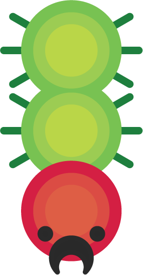
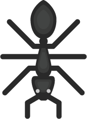
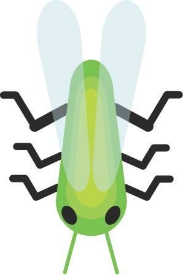
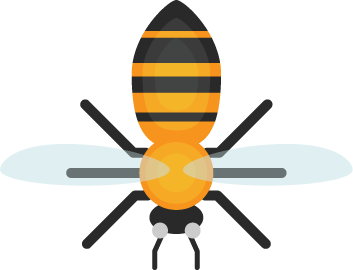
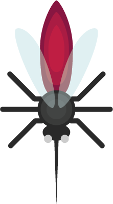
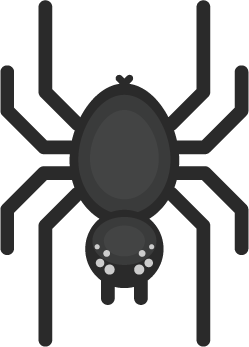
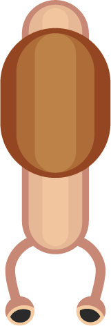
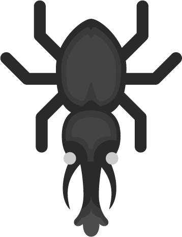
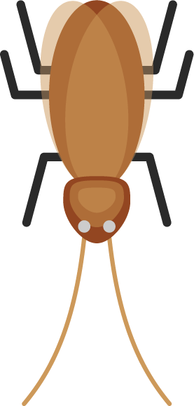
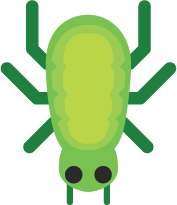

Beetles
These are all the beetles currently planned for the game
Lieutenant Ladybug
The ladybug is the standard unit. It has medium HP, movementspeed and firerate.

Caterpillar of Duty
The caterpillar consists of three parts; two body-nodes and a head. Each part has its own HP. The caterpillar starts off with a low movementspeed, but as it loses bodyparts, it gains speed. If it loses the middle-part first, it splits into two, what basically equates to two ladybugs.

Anthem
The ants have low HP, but what they lack in sustain, they make back in strategy. They have a special hive mind ability, that makes every ant focus the same enemy at once. To make this ability noticeable, picking ants gives you 3 ants.

Grass shopper
The grass hopper is a melee unit. It attacks by jumping high into the air, and slamming down on its enemies dealing damgage in an area around it. While airborn the grass hopper is invulnurable, but when it lands it has a cooldown period where it can't jump.

To bee or not to bee
The bee's shots don't deal damage directly, instead it applies a poison effect that deals one damage in a set interval. There is a max to how many different targets a bee can have poisoned at once.

Mosquiteer
The mosquiteer is a fast melee unit. It flies up to an enemy and drains HP with its proboscis. When it has drained some amount of HP both itself and the enemy are stunned for a short while, after which it flees.

Spejdermand
The spider shoots out webs that impare the enemies' movement. More specifically it shoots two shots. If two enemies get hit with these they get tethered together and are forced to stay close together. If only one enemy is hit, it gets tethered to the ground, where it can only move within a certain radius.

Sliding Slug
This unit doesn't attack, instead it slides around the play area, leaving a trail of slime behind it. Enemies walking onto the slime have their movementspeed significantly decreased. Additionally the slug will occasionally squirt out slime in the direction of the nearest enemy.

Stampeding Stag
The stag is a battering ram of a melee unit. It stands still building up power, until it is released in form of a powerful charging attack, launching itself towards the nearest enemy.

Lousy Woodlouse
This unit doesn't attack directly, instead rolling itself up into a ball, rolling around the play area dealing damage on collision.
Cuckroach
The cuckroach will attempt to get close to its enemies, after which it will explode and deal damage in an area around it. This kills the cuckroach, but it has the potential to be a worthwhile tradeoff.

Altruistic Aphid
This little fellow does not participate actively in the fighting, instead providing healing for its own team. It does this by occasionally squirting out 'milk' around itself, healing friendly beetles.
